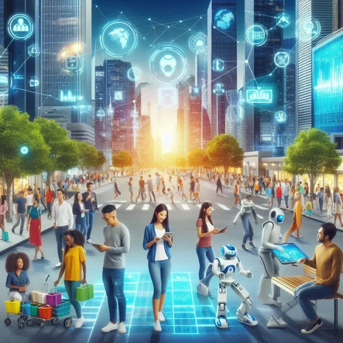

TCU libera licitação da Secom para empresas de comunicação digital
Processo havia sido suspenso em julho por suspeita de irregularidades
O Tribunal de Contas da União liberou a licitação de comunicação digital de quase R$ 200 milhões da Secretaria de
Comunicação Social (Secom) da Presidência da República. A decisão foi divulgada pelo ministro Aroldo Cedraz nessa
quinta-feira (9). Agora, a Secom poderá retomar a contratação de quatro empresas de publicidade.
A licitação havia sido suspensa, em julho do ano passado, após denúncia do Ministério Público de Contas por suspeitas
de irregularidades. De acordo com o MP, houve quebra de sigilo, pois o portal O Antagonista teria publicado, antes do anúncio oficial, as iniciais das empresas vencedoras. Em resposta, a Secom negou qualquer tipo de violação e acrescentou que a publicação na imprensa não apresenta evidências que confirmem o vazamento de informações.
Para o ministro Aroldo Cedraz, apesar da gravidade dos fatos narrados pelo MP, não foram apresentados elementos que
sustentem a ocorrência de irregularidade. A licitação está na fase final de formalização dos contratos.
Segundo a Secom, as empresas vão planejar, desenvolver e implementar soluções de comunicação digital, como também
realizar moderação de conteúdo e de perfis em redes sociais. Os contratos terão duração de um ano, podendo ser
prorrogados.
-- Informações de 10/01/2025 --
O impacto das redes sociais na comunicação moderna: Desafios e oportunidades
O trabalho de profissionais e empresas de comunicação especializadas e com experiência é fundamental para a conquista do resultado almejado com segurança, eficiência e eficácia.
As redes sociais revolucionaram a forma como nos comunicamos no mundo moderno. Desde o surgimento do finado Orkut e, logo depois, em 2004, do Facebook, até as plataformas de mídia social de hoje, como Instagram, Twitter (X), TikTok, LinkedIn e Thread, entre outras, essas plataformas digitais desempenham um papel fundamental na maneira como interagimos, compartilhamos informações e nos conectamos uns com os outros. Esse impacto nas relações sociais e na comunicação é notável e gera tanto desafios quanto oportunidades para indivíduos e sociedade como um todo.
Desafios:
1-Propagação de informações falsas:
As redes sociais possibilitaram uma disseminação de informações em uma escala sem precedentes! Contudo, isso também levou a um aumento na disseminação de notícias falsas e informações enganosas. A falta de verificação de fatos e a propagação acelerada desses dados podem levar a consequências sérias, como polarização política, conflitos sociais e danos à reputação de indivíduos e empresas. Por isso, é importante um monitoramento contínuo para neutralização de negatividade.
2-Eco câmaras e bolhas de filtro:
Os algoritmos das redes sociais tendem a mostrar conteúdo com base nas preferências e interesses dos usuários. Isso cria "eco câmaras" e "bolhas de filtro", onde as pessoas ficam expostas principalmente a perspectivas que confirmam suas próprias opiniões e crenças. Essa segmentação pode levar à polarização e à falta de compreensão mútua entre diferentes grupos sociais.
3-Privacidade e segurança
Informações pessoais compartilhadas nas redes sociais e falta de cuidado no manejo podem ser uma ameaça à privacidade dos usuários que podem levar ao roubo de identidade, assédio cibernético e outras formas de exploração.
Oportunidades:
1-Conexões globais:
As redes sociais permitem que as pessoas se conectem além das fronteiras geográficas, culturais e linguísticas. Essa conectividade global possibilita amizades e colaborações que antes eram impensáveis, promovendo a compreensão intercultural e a solidariedade.
2-Engajamento comunitário:
As redes sociais podem unir comunidades com interesses e causas semelhantes. Grupos on line têm sido fundamentais para ativismo social, compartilhamento de informações sobre causas importantes e mobilização de esforços em resposta a desastres naturais e emergências.
3-Marketing, oportunidades comerciais e networking:
Para as empresas, as redes sociais oferecem um potencial incomparável para alcançar e interagir com seu público-alvo. O marketing digital permite um alcance mais amplo, além de um contato mais direto e personalizado com clientes e potenciais clientes, fidelizando-os, transformando-os em fãs e, consequentemente, em consumidores recorrentes.
4-Amplificação de vozes:
As redes sociais deram voz e vez a indivíduos que anteriormente não tinham acesso a plataformas de mídia tradicionais. Isso permitiu que pessoas compartilhassem suas histórias, talentos e opiniões com um público mais amplo, promovendo maior diversidade de perspectivas na comunicação.
Conclusão:
O impacto das redes sociais na comunicação moderna é inegável. Essas plataformas trouxeram inúmeros desafios, como a
disseminação de informações falsas, a polarização social e questões de privacidade. No entanto, elas também oferecem
oportunidades significativas para conectar pessoas, criar comunidades engajadas, impulsionar ações sociais e amplificar
vozes anteriormente marginalizadas.
A responsabilidade de aproveitar o potencial positivo das redes sociais recai sobre todos nós - indivíduos,
entidades, empresas e governos. Devemos ser conscientes de como usamos essas ferramentas poderosas e buscar
formas de minimizar os efeitos negativos, enquanto maximizamos os benefícios para a sociedade como um todo. Ao
fazer isso, podemos colher os frutos das redes sociais como uma ferramenta transformadora e capacitadora na
comunicação moderna.
E, para tal, o trabalho de profissionais e empresas de comunicação especializadas e com experiência é fundamental
para a conquista do resultado almejado com segurança, eficiência e eficácia.
-- Informações de 01/08/2023 --
Privacidade e Cibersegurança são temas inseparáveis, reforçam especialistas
Durante a Semana de Proteção de Dados, líderes do setor reforçam que privacidade de dados e segurança digital são temas indissociáveis. Segundo eles, apesar de parecer óbvio, muitas organizações ainda sofrem pela falta dessa integração
A Semana Internacional de Proteção de Dados abriu a oportunidade de diversos especialistas e lideranças do setor a
debaterem o tema entre si. Dentre as tônicas postas por eles, uma se destaca: sem a presença de uma Cibersegurança
robusta, é impossível imaginar qualquer conceito de privacidade das informações. Logo, pensar esses dois fundamentos
separadamente é uma decisão equivocada, que expõe empresas a novos riscos todos os anos.
Um dos que ressaltaram essa questão foi o Partner da Consultoria Grant Thornton, Everson Probst. Durante o debate
organizado pela Autoridade Nacional de Proteção de Dados (ANPD)e pelo Centro de Estudos, Resposta e Tratamento de
Incidentes de Segurança no Ponto BR (CERT.br), o executivo reforçou que a atual realidade do ciberespaço não permite
descuidos com os dados pessoais.
“Hoje, todos os dados, mesmo os mais críticos e sensíveis, são digitais e estão armazenados em algum ponto da rede.
Por isso, separar os processos de privacidade dos de tecnologia e de Segurança é um grande erro que, infelizmente, ainda é muito cometido pelas corporações, e é algo que apenas se torna evidente depois que se sofre um incidente cibernético que vaza dados críticos da empresa, de clientes ou de colaboradores”, explica Probst.
Seguindo nessa linha, Fabiana Cebrian, Coordenadora Geral de Tecnologia e Pesquisa da ANPD, afirma que a Segurança
precisa se tornar, cada vez mais, um pilar fundamental quando o assunto é dado. Para isso, a conformidade com as
melhores práticas de Segurança precisa cruzar a fronteira da mera formalidade e se transformar em medidas efetivas,
com técnicas de defesa, governança e resposta a incidentes.
O primeiro passo deve ser traçar um planejamento eficiente de enfrentamento de crises que envolvam dados sensíveis.
Para o Gerente de SI da V.Tal, André Borges, esse plano deve estabelecer papéis claros de cada setor e funcionário,
além de traçar um roteiro de processos capaz de coordenar as ações até o encerramento definitivo da crise.
br
“Planejar a resposta a incidentes é um exercício que evidencia como os trabalhos do DPO e do time de SI estão
interligados. Além disso, essa ação também mostra a necessidade de esse trabalho ser compartilhado desde os
funcionários de base até a alta gestão, por meio da construção de cultura, bom senso e conscientização”, acrescenta
Borges.
Segurança de Dados como vantagem competitiva:
Apesar de ainda não ser uma realidade absoluta no mercado, os riscos às informações pessoais devem gerar
transformações importantes na visão de executivos e C-Levels sobre essa aproximação. Conforme aponta a CISO e DPO da
Leroy Merlin Brasil, Fabiana Tanaka, a coordenação entre privacidade e Segurança deve se tornar uma fonte crescente de
influência sobre os objetivos da empresa.
Durante sua palestra apresentada no evento “Privacy Hour”, organizado pelo escritório Peck Advogados, Fabiana
comenta que a proteção de dados e Cibersegurança também são vantagens competitivas para o negócio. “A conformidade
com boas práticas de privacidade e Cyber permitem à empresa valorizar os padrões éticos mantidos internamente,
tornando-a uma parceira mais interessante para clientes, colaboradores e fornecedores”, disse a executiva.
-- Informações de 29/01/2025 --
Como a cibersegurança pode prever falhas em ambientes tecnológicos
Com o aumento constante de ameaças cada vez mais sofisticadas, a dependência de sistemas de TI eficientes e seguros
nunca foi tão grande. Para proteger dados sensíveis e garantir a continuidade das operações é imprescindível contar
com uma cibersegurança proativa, capaz de mitigar falhas e impedir que ocorra novas incidentes de segurança.
Soluções como sistemas de monitoramento em tempo real, análise comportamental e inteligência artificial (IA) ajudam a
identificar anomalias e padrões suspeitos. Essa abordagem ágil é essencial para prevenir falhas, já que muitas brechas
de segurança surgem devido a erros no desenvolvimento de software, falta de atualização e falhas na configuração de
sistemas. Muito embora, nem todas as falhas nas tecnologias resultem de ataques externos.
Muitas vezes, ameaças internas, intencionais ou não, podem comprometer a segurança de uma empresa. Políticas de
segurança claras e programas de conscientização são fundamentais para minimizar esses riscos.
Uma cibersegurança preventiva inclui o gerenciamento de vulnerabilidades e correções de patchs, além da visibilidade e
monitoramento de toda rede com registro de atividades do ambiente. Com isso, podemos utilizar esse "olho" para prever
falhas antes que aconteçam, pois apontam sistemas desatualizados e anomalias que podem levar a uma falha crítica.
Dada a complexidade atual dos ambientes de TI, com integrações multi-cloud, OT (Tecnologia da Operação), IoT, sistemas
on-premise e legados, é humanamente impossível entender e observar a rede sem um plano que envolva ferramentas adequadas, referências de frameworks de cibersegurança modernos e pessoas bem capacitadas e que possam trabalhar de forma livre de processos manuais simplórios com a ajuda de IA.
Também não são raros os casos de a segurança da informação encontrar falhas em sistemas de OT que podem causar a
paralização da produção ou mesmo representar riscos à segurança física das pessoas. Ou seja, é a cibersegurança
ajudando as operações das companhias para torná-las mais eficientes.
Prever falhas em ambientes tecnológicos não é apenas uma questão de tecnologia, mas também de estratégia e prevenção.
A cibersegurança desempenha um papel crucial ao identificar vulnerabilidades, realizar a gestão de riscos e neutralizar
ameaças antes que causem danos.
Empresas que investem em soluções proativas, treinamento de pessoal e inovação tecnológica não só protegem seus dados,
mas também garantem a continuidade dos negócios e credibilidade em um mercado cada vez mais competitivo.
-- Informações de 05/02/2025 --
Inteligência Artificial na Automação Industrial
O que é Inteligência Artificial aplicada à automação industrial?
A Inteligência Artificial refere-se à capacidade das máquinas de realizar tarefas que normalmente requerem a inteligência humana. Quando aplicada à automação industrial, a IA permite que máquinas e sistemas autônomos aprendam, adaptem-se e tomem decisões baseadas em dados coletados em tempo real. Essa tecnologia possibilita uma automação mais inteligente, na qual os sistemas são capazes de se ajustar e melhorar continuamente com o objetivo de maximizar a eficiência e a qualidade dos processos de produção.
Melhoria dos processos de produção por meio da IA
Otimização da produção
A IA pode analisar grandes volumes de dados operacionais, como taxas de produção, indicadores de desempenho e falhas de equipamentos, para identificar padrões e tendências. Com base nessas análises, os algoritmos de IA podem fornecer insights valiosos para otimizar a produção, como ajustar a velocidade das máquinas, reduzir o tempo de setup, otimizar o fluxo de materiais e minimizar desperdícios.
Manutenção preditiva
Através da análise de dados coletados por sensores em tempo real, a IA pode prever falhas em equipamentos industriais antes mesmo de ocorrerem, permitindo a realização de manutenções preditivas. Isso evita paradas não programadas e reduz custos relacionados a reparos de emergência, além de maximizar a disponibilidade dos ativos e prolongar sua vida útil.
Controle de qualidade aprimorado
A IA possibilita a implementação de sistemas avançados de visão computacional e reconhecimento de padrões, que são capazes de inspecionar produtos em alta velocidade e com precisão. Dessa forma, é possível detectar defeitos de maneira mais eficiente, garantindo que apenas produtos de alta qualidade sejam liberados para o mercado. Isso reduz retrabalhos, diminui desperdícios e aumenta a satisfação do cliente.
Aplicação da Inteligência Artificial na indústria
Robótica avançada
A IA é essencial para o desenvolvimento de robôs industriais autônomos e colaborativos, capazes de realizar tarefas complexas e interagir com seres humanos de forma segura. Esses robôs podem executar atividades repetitivas, perigosas que exigem alta precisão, liberando os trabalhadores para tarefas mais estratégicas e criativas.
Análise de dados e tomada de decisões
A IA na automação industrial também desempenha um papel fundamental na análise de dados e na tomada de decisões,
ajudando engenheiros de produção e gestores da indústria a nortearem suas ações.
Por meio de algoritmos de aprendizado de máquina, os sistemas de IA podem processar grandes quantidades de dados em tempo real e identificar padrões, anomalias ou oportunidades de melhoria. Isso permite que engenheiros de produção tenham uma visão mais precisa e atualizada das operações.
Sistemas de logística e cadeia de suprimentos
A aplicação da IA na automação industrial também tem impacto na logística e na cadeia de suprimentos. Algoritmos de IA podem analisar demanda, previsões de vendas, estoques e outros dados relevantes para otimizar o planejamento de produção, agendamento de entregas, gestão de estoques e roteamento de transporte. Isso resulta em uma cadeia de suprimentos mais eficiente, reduzindo custos e tempo de entrega, além de melhorar a satisfação do cliente.
Desafios e considerações
Embora a IA ofereça benefícios significativos na automação industrial, é importante considerar alguns desafios e
considerações. A implementação eficaz da IA requer a disponibilidade de dados de qualidade, sistemas de coleta e
armazenamento adequados, e a colaboração entre equipes de engenharia, tecnologia da informação e operações. Além disso,
é necessário garantir a segurança cibernética dos sistemas de IA para proteger contra possíveis vulnerabilidades.
A Inteligência Artificial aplicada à automação industrial tem o potencial de revolucionar os processos de produção.
Através da otimização da produção, manutenção preditiva, controle de qualidade aprimorado e análise de dados para
tomada de decisões, a IA impulsiona a eficiência, a produtividade e a competitividade das indústrias.
Engenheiros de produção e gestores de indústrias devem explorar as possibilidades da IA e buscar parcerias estratégicas
para implementar soluções de automação inteligentes, aproveitando ao máximo os benefícios que essa tecnologia inovadora
pode oferecer.
-- Informações de 30/05/2023-
Especialista comenta o impacto da IA na sociedade moderna

A inteligência artificial (IA) generativa está prestes a transformar a sociedade de maneiras profundas e variadas. Empresas de diversos setores estão utilizando essa tecnologia para melhorar otimizar processos e aumentar eficiência das interações humanas. Mateus Pereira, Arquiteto de Soluções Senior da Amazon Web Services (AWS), compartilhou suas percepções sobre como a IA generativa pode impactar a sociedade no futuro.
No setor financeiro, empresas como a XP Investimentos e o BTG Pactual estão utilizando IA generativa para analisar grandes volumes de dados de mercado e prever tendências econômicas. “A capacidade da IA de fornecer análises precisas e em tempo real está transformando a tomada de decisões no mercado financeiro, permitindo que as empresas ajam de maneira mais rápida e informada”, explica Mateus.
No setor da saúde, a IA generativa promete avanços significativos. Ela pode ser utilizada para analisar grandes volumes de dados médicos e gerar diagnósticos precisos em tempo recorde, aumentando a eficiência dos profissionais de saúde. “A IA generativa tem o potencial de revolucionar o diagnóstico e o tratamento de doenças, proporcionando uma medicina mais personalizada e eficaz”, comenta Pereira.
A IA generativa também está impactando o mundo do trabalho, automatizando tarefas repetitivas e liberando os trabalhadores para se concentrarem em atividades mais criativas e estratégicas. Ainda nesse tema de impacto no mundo do trabalho, Mateus pontua que “A automação de tarefas administrativas pela IA permite que os profissionais se concentrem em inovações e melhorias contínuas, elevando o padrão de qualidade dos serviços”.
Além disso Mateus Pereira acrescenta que assistentes virtuais avançados estão tornando nossas interações com dispositivos mais naturais e intuitivas: “Essa tecnologia está tornando nossas interações com dispositivos mais fluidas e eficientes, proporcionando uma experiência de usuário aprimorada”.
No entanto, a implementação da IA generativa apresenta desafios significativos. Um dos maiores é a ética e a proteção de dados. “A segurança e a privacidade dos dados são de extrema importância. As empresas precisam implementar medidas rigorosas para garantir que as informações sejam protegidas e usadas de maneira ética”, alerta Pereira. Também é crucial abordar questões como a transparência dos algoritmos e o viés algorítmico, garantindo que a IA seja justa e imparcial.
Outro desafio é a inclusão digital. É fundamental garantir que todos, independentemente de suas condições socioeconômicas, tenham acesso às vantagens proporcionadas pela IA. “A equidade no acesso à tecnologia é essencial para que todos possam se beneficiar das inovações trazidas pela IA generativa. Isso requer investimentos em infraestrutura e educação tecnológica”.
A combinação da IA generativa com tecnologias como realidade aumentada (AR) e realidade virtual (VR) pode criar experiências imersivas em diversos setores, desde a educação até o entretenimento. É possível, a partir desse tipo de solução, explorar ambientes históricos em realidade virtual ou participar de treinamentos corporativos em um ambiente de realidade aumentada. Mateus afirma que “Essas tecnologias têm o potencial de tornar nossas experiências mais envolventes e interativas, expandindo as fronteiras do que é possível”.
A IA generativa também pode desempenhar um papel crucial na resolução de problemas globais. Ela pode ser utilizada para analisar dados ambientais e desenvolver soluções para questões como a mudança climática e a conservação de recursos naturais. “A IA tem o potencial de nos ajudar a enfrentar desafios ambientais de maneira mais eficaz e sustentável”, observa Pereira.
Por fim, o Arquiteto de Soluções Senior da AWS reforça que é importante lembrar que a IA deve complementar e enriquecer a interação humana, não substituí-la. “A tecnologia deve servir como uma ferramenta para melhorar a qualidade de vida e ampliar as capacidades humanas. O objetivo final é criar uma sociedade onde a IA e os seres humanos trabalhem juntos em harmonia”.
Em resumo, a IA generativa está no centro da transformação da sociedade, prometendo revolucionar diversos setores e melhorar a qualidade de vida das pessoas. Com um uso ético e inclusivo, essa tecnologia pode abrir novas fronteiras e criar um futuro mais próspero e equilibrado para todos.
-- Informações de 06/02/2025 -
O sucesso dos games: entretenimento na quarentena
Com os consumidores dentro de casa por conta do coronavírus, os games tornaram-se a fonte primordial de
entretenimento, batendo recordes em todo mundo. A indústria, que já estava em ascensão no ano de 2019,
teve um boom de crescimento do mês de março em diante – início da quarentena na maioria dos países do ocidente.
Quer saber mais sobre o assunto? Confira os detalhes em nosso infográfico!
AUMENTO NO CONSUMO DE JOGOS
De acordo com dados da Verizon, mundialmente houve um aumento de 75% no uso de videogames em decorrência
do confinamento.
- Itália, Brasil e Espanha: 40% de aumento no consumo de jogos
- China: 25% de crescimento em relação aos últimos 4 meses de 2019
- Alemanha: 31% de aumento nas compras online de vídeo games
FATURANDO EM MEIO À CRISE
- 10 bilhões de dólares foram gastos com vídeo games em março
- 50% de aumento em compras e buscas por computadores mais potentes
- 20% de crescimento nas vendas de consoles de vídeo games
Ocupando o 13º lugar no ranking, Brasil é o principal mercado de jogos da América Latina.
-- Informações de 04/2021 -
A ascensão do entretenimento online no Brasil: como as plataformas digitais estão mudando as atividades de lazer
A transformação digital do entretenimento
Nos últimos anos, o Brasil passou por uma transformação significativa na maneira como as pessoas se envolvem com o
entretenimento. Com a crescente disponibilidade de internet de alta velocidade e a ampla adoção de smartphones, as
plataformas digitais se tornaram a escolha preferida de muitos que buscam atividades de lazer. De streaming de vídeo e
mídia social a jogos online e cassinos virtuais, a mudança para o entretenimento digital está remodelando a indústria.
Uma das tendências mais notáveis nessa transformação é a ascensão das plataformas de jogos online. Sites que oferecem
experiências interativas, como os jogos de cassino e caça-níqueis online com dinheiro real da High Roller, ganharam
popularidade entre os jogadores brasileiros, fornecendo uma forma de entretenimento acessível e envolvente.
O crescimento dos jogos online no Brasil
O setor de jogos online no Brasil se expandiu rapidamente, impulsionado pelos avanços na tecnologia e mudanças no
comportamento do consumidor. A conveniência de jogar em casa, juntamente com experiências de jogo imersivas, tornou
os cassinos digitais e as plataformas de jogos cada vez mais atraentes. Além disso, a crescente aceitação de métodos
de pagamento online facilitou transações contínuas, aumentando ainda mais o envolvimento do usuário.
De acordo com relatórios do setor, o Brasil está entre os mercados de jogos online de crescimento mais rápido da
América Latina. Com discussões regulatórias em andamento para estabelecer diretrizes mais claras para jogos digitais,
o setor está pronto para um crescimento ainda maior.
Streaming e mídias sociais como canais de entretenimento dominantes
A ascensão do entretenimento online não apenas mudou os hábitos do consumidor, mas também contribuiu
significativamente para a economia brasileira. A indústria do entretenimento digital criou novas oportunidades
de emprego, de criadores de conteúdo e desenvolvedores de jogos a profissionais de tecnologia especializados
em segurança online e experiência do usuário.
Além disso, os investimentos internacionais na infraestrutura digital do Brasil continuam a dar suporte ao
crescimento das plataformas online, fomentando a inovação em tecnologias de entretenimento. À medida que a
demanda por experiências digitais aumenta, as empresas estão se concentrando em melhorar a acessibilidade e a
segurança para fornecer aos usuários interações online seguras e agradáveis.
-- Informações de 13 de fevereiro de 2025-
Conheça as estratégias de comunicação digital de 3 campeãs do BBB
O Big Brother Brasil, da Rede Globo, um dos reality shows mais conhecidos e assistidos na TV brasileira, terá a sua nova edição estreando nesta segunda, 13/1, com uma grande novidade, a competição em duplas. Esta será uma oportunidade de interessados no tema Comunicação Digital acompanharem o que os participantes mostrarão como se prepararam para o uso da comunicação digital como estratégia. A seleção das ferramentas e técnicas que compõem essas ações são o ponto em comum entre os participantes com mais destaque no reality, afirma o RP Digital e estrategista de influência, Janiel Kempers.
Mas, mesmo com as novidades, a comparação com as edições anteriores é inevitável, principalmente quando se trata dos campeões, afinal, qual terá sido o segredo dos vencedores do BBB?
A comunicação digital no reality
A comunicação digital se tornou cada vez mais essencial para a construção de marcas, algo que os participantes do BBB (e suas equipes) mostram entender muito bem, apesar de ter um impacto bem maior, como afirma o RP Digital e estrategista de influência, Janiel Kempers.
“O seu impacto não se limita aos reality shows, a comunicação digital é uma das áreas mais promissoras do mercado e pode beneficiar qualquer setor, impulsionando tanto a imagem de pessoas quanto a venda de produtos e serviços”, explica.
– Manu Gavassi
A atriz e cantora, inovou ao planejar sua estratégia de marketing antes do BBB, programando conteúdos para redes sociais com humor, como vídeos simulando um “retiro espiritual”, a estratégia criou conexão com o público e alinhou sua comunicação online com seu comportamento no programa. Mesmo sem vencer, Manu conquistou o 3º lugar e teve um clipe indicado a dois festivais, incluindo um na Califórnia;
– Juliette
Juliette, vencedora do BBB 21, teve como grande destaque uma estratégia digital de humanização. Sua equipe soube utilizar eventos do programa para reforçar posicionamentos e manter uma comunicação consistente entre redes sociais. Criaram a comunidade “os cactos”, engajando fãs em sua narrativa de superação;
– Thelma Assis
Em contraste aos cases anteriores, onde a estratégia foi mais incisiva, no caso de Thelma ela foi bem mais discreta, segundo a própria, a análise foi sua maior arma “Eu ressignifiquei esse negócio de planta na minha edição. A minha estratégia era essa, observar. Eu sempre fiquei de olho, mas nunca deixando de se posicionar. Isso faz você sair como ‘sabonete’. Disso o Brasil não gosta. Deixei o povo se matar no primeiro mês para depois analisar vários paredões”.
-- Informações de 01/07/2025 --